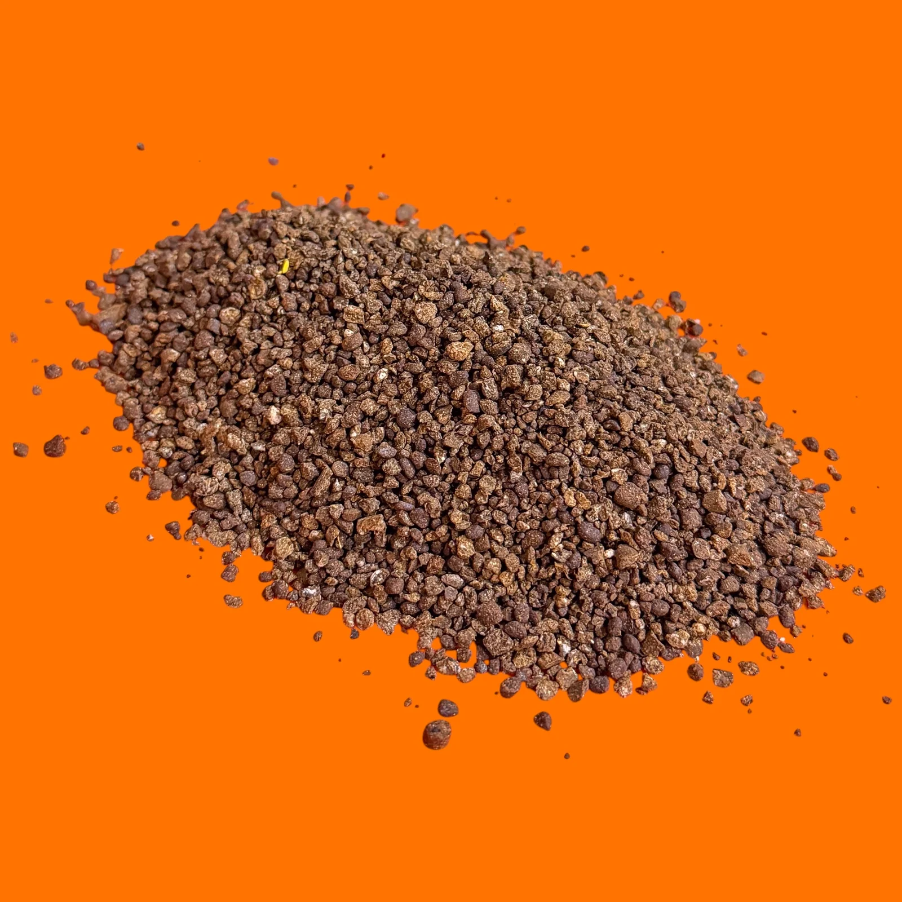

Gebruik de dosering van jouw product
Bij Dungking Gazonmest deel je het aantal vierkante meters door 15 voor de hoeveelheid in kilogram. Voor de genoemde najaarsgift deel je door 10. Controleer eerst of die toepassing bij jouw gazon en eerdere bemesting past.
| Gazon | Gazonmest 1 kg / 15 m² | Najaar 1 kg / 10 m² |
|---|---|---|
| 30 m² | 2 kg | 3 kg |
| 60 m² | 4 kg | 6 kg |
| 100 m² | Circa 6,67 kg | 10 kg |
| 150 m² | 10 kg | 15 kg |
De laatste kolom hoort bij Dungking Border- en Najaarsmest. De toepassingsperiode voor gazon komt uit het Gazonmest-blad. Neem een periode voor borders niet automatisch over voor gras.
Meet het gras, niet de hele tuin
Splits een onregelmatig gazon op in eenvoudige vlakken. Een vlak van 6 bij 5 meter is 30 m². Trek een border of terras af als je die eerder hebt meegerekend. Meet bij een plaatselijke toepassing alleen het werkelijk te behandelen deel.
Een voorbeeld met twee strooirondes
Stel dat je 60 m² met Gazonmest behandelt: totaal 4 kg. Deel het gazon op in twee vakken van 30 m² en reserveer 2 kg per vak. Wil je per vak kruislings werken, gebruik dan 1 kg in de eerste richting en 1 kg in de tweede. Dat blijft samen 2 kg per vak, geen dubbele gift.
Bij een strooiwagen is een standnummer geen dosering in g/m². De uitkomst hangt ook af van apparaat en korrel. Controleer de apparaatinstelling en de werkelijk verbruikte hoeveelheid; vul niet op gevoel telkens opnieuw bij.
Een berekende hoeveelheid is geen automatische bemestingsbeurt
Noteer wanneer je eerder hebt gestrooid. Controleer ook of bodemvocht en groei geschikt zijn. Gebruik de bemestingskalender voor het gazon voor de context en lees bij een droge periode eerst wanneer je beter wacht met bemesten.
Veelgestelde vragen
Veelgestelde vragen
Hoeveel Dungking Gazonmest heb ik nodig voor 100 m²?
Bij 1 kg per 15 m² is dat 100 ÷ 15 = circa 6,67 kg. Dit is de richtlijn voor de genoemde Gazonmest-toepassing, niet voor elk product.
Moet ik bij kruislings strooien tweemaal de dosering gebruiken?
Nee. Verdeel de totale afgewogen hoeveelheid over twee strooirichtingen. De totale gift blijft hetzelfde.